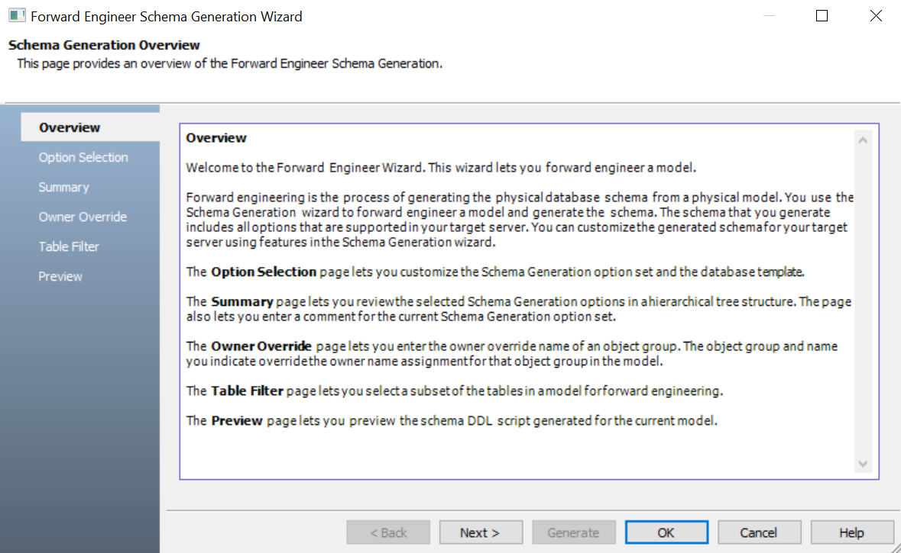
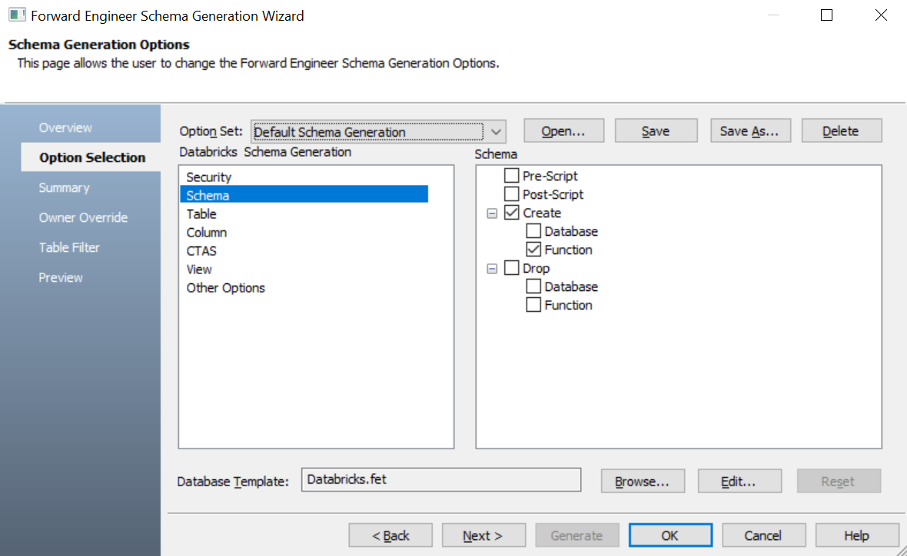
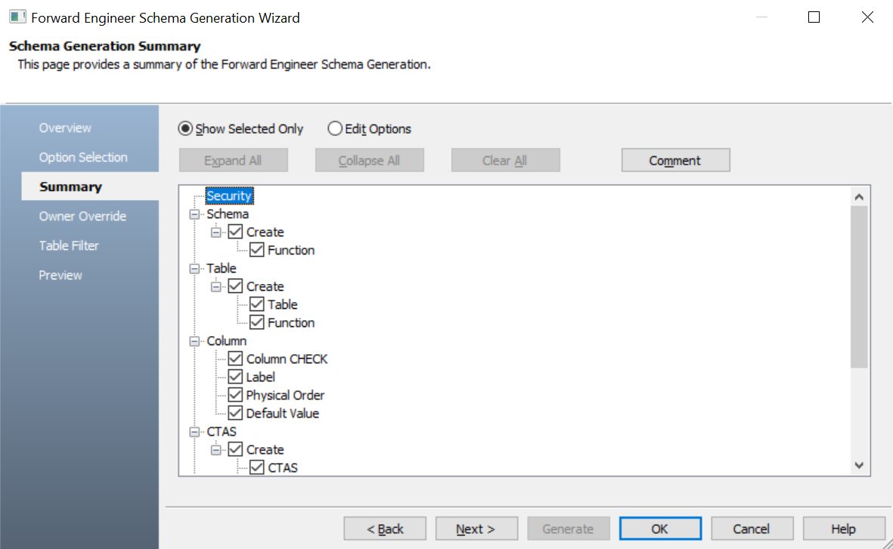
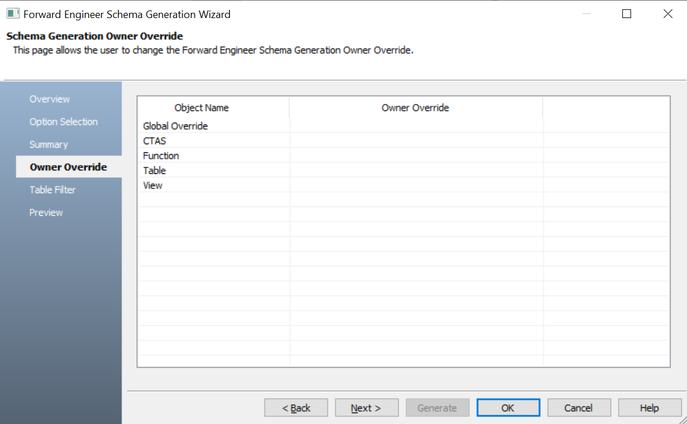
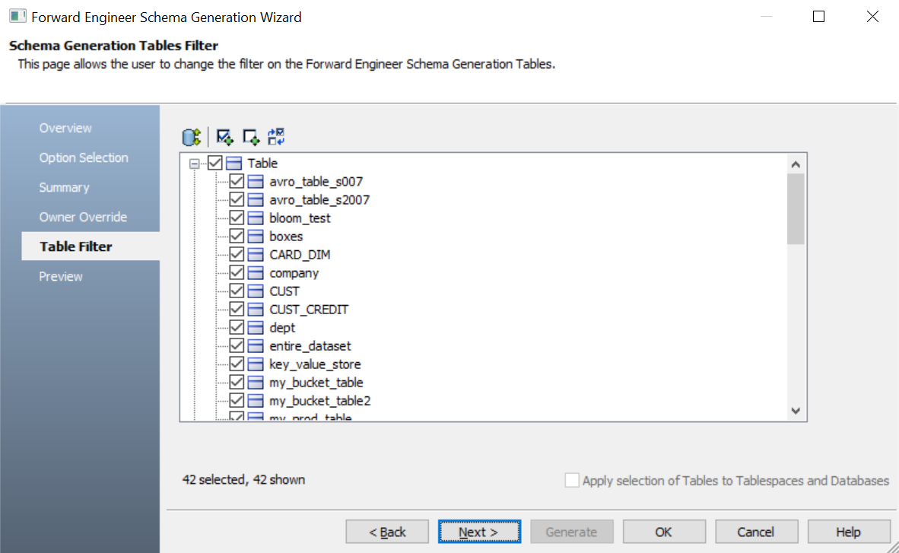
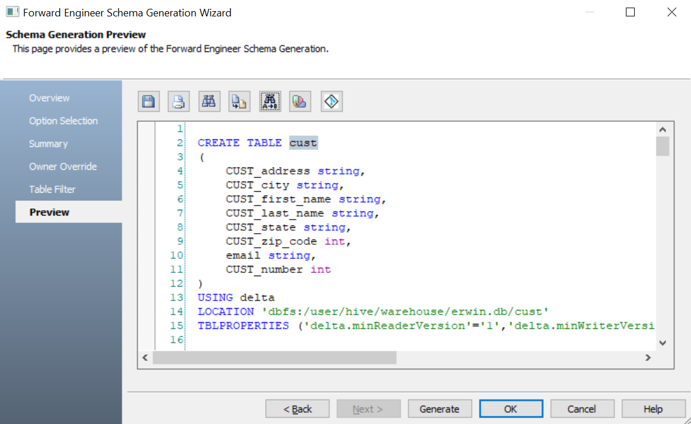
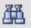
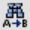
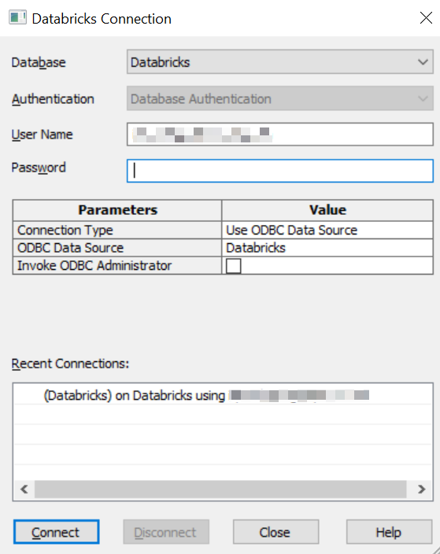

Open your Databricks model.
Ensure that you are in the Physical mode.
Click Actions > Schema.
The Forward Engineer Schema Generation Wizard appears.

Click Option Selection.
The Option Selection tab displays the default option set. Clear the Drop check boxes and select other syntax check boxes as required.

Click Next.
The Summary tab appears. It displays a list of selected options for the schema generation. Use Edit Options to update selected options.

Click Next.
The Owner Override tab appears. It displays a list of objects.

Enter database names as owner of the objects.
Click Next.
The Table Filter tab appears. It displays a list of tables available in your model.

Click Preview to view the schema and its script.

Use the following options:
-
Save (
 ): Use this option to save the generated script.
): Use this option to save the generated script. -
Print (
 ): Use this option to print the generated schema.
): Use this option to print the generated schema. -
Search (): Use this option to search through the generated schema.
-
Copy (
 ): Use this option to copy the selected text in the schema.
): Use this option to copy the selected text in the schema. -
Replace () : Use this option to find and replace text in the generated schema.
-
Text Options (
 ): Use this option to configure the preview text editor's look and feel, such as window, font, syntax color settings. For more information, refer to the Forward Engineering Wizard - Preview Editor topic.
): Use this option to configure the preview text editor's look and feel, such as window, font, syntax color settings. For more information, refer to the Forward Engineering Wizard - Preview Editor topic.
The Databricks Connection screen appears.

The forward engineering process starts. The script generates your physical database schema. You can access your database and verify the newly generated schema.